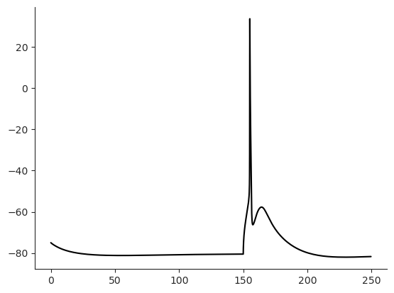
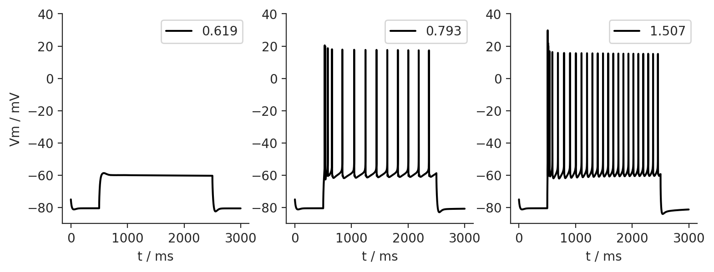
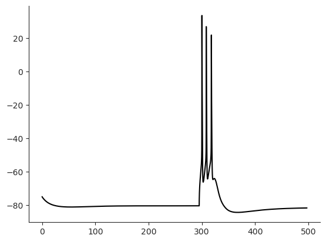

Cell and NEURON API¶
We can run simulations with Cell using NEURON’s Python API, as outlined below
[ ]:
import Interface as I
from getting_started import example_data_dir
cell_param_file = I.os.path.join(
example_data_dir,
'biophysical_constraints',
'86_C2_center.param')
{'info': {'name': 'hay_2011_dend_test',
'author': 'regger',
'date': '15Oct2014'},
'NMODL_mechanisms': {'channels': '/'},
'mech_globals': {},
'neuron': {'filename': '/gpfs/soma_fs/scratch/meulemeester/project_src/in_silico_framework/getting_started/example_data/anatomical_constraints/86_C2_center.hoc',
'Soma': {'properties': {'Ra': 100.0,
'cm': 1.0,
'ions': {'ek': -85.0, 'ena': 50.0}},
'mechanisms': {'global': {},
'range': {'pas': {'spatial': 'uniform',
'g': 3.26e-05,
'e': -90},
'Ca_LVAst': {'spatial': 'uniform',
'gCa_LVAstbar': 0.00462},
'Ca_HVA': {'spatial': 'uniform',
'gCa_HVAbar': 0.000642},
'SKv3_1': {'spatial': 'uniform',
'gSKv3_1bar': 0.983},
'SK_E2': {'spatial': 'uniform',
'gSK_E2bar': 0.0492},
'K_Tst': {'spatial': 'uniform',
'gK_Tstbar': 0.0471},
'K_Pst': {'spatial': 'uniform',
'gK_Pstbar': 0.0},
'Nap_Et2': {'spatial': 'uniform',
'gNap_Et2bar': 0.00499},
'NaTa_t': {'spatial': 'uniform',
'gNaTa_tbar': 2.43},
'CaDynamics_E2': {'spatial': 'uniform',
'decay': 770.0,
'gamma': 0.000616},
'Ih': {'spatial': 'uniform',
'gIhbar': 8e-05}}}},
'Dendrite': {'properties': {'Ra': 100.0, 'cm': 2.0},
'mechanisms': {'global': {},
'range': {'pas': {'spatial': 'uniform',
'g': 6.31e-05,
'e': -90.0},
'Ih': {'spatial': 'uniform',
'gIhbar': 0.0002}}}},
'ApicalDendrite': {'properties': {'Ra': 100.0,
'cm': 2.0,
'ions': {'ek': -85.0,
'ena': 50.0}},
'mechanisms': {'global': {},
'range': {'pas': {'spatial': 'uniform',
'g': 8.82e-05,
'e': -90},
'SK_E2': {'spatial': 'uniform',
'gSK_E2bar': 0.0034},
'Ca_LVAst': {'spatial': 'uniform_range',
'gCa_LVAstbar': 0.104,
'begin': 900.0,
'end': 1100.0,
'outsidescale': 0.01},
'Ca_HVA': {'spatial': 'uniform_range',
'gCa_HVAbar': 0.00452,
'begin': 900.0,
'end': 1100.0,
'outsidescale': 0.1},
'CaDynamics_E2': {'spatial': 'uniform',
'decay': 133.0,
'gamma': 0.0005},
'SKv3_1': {'spatial': 'uniform',
'gSKv3_1bar': 0.0112},
'NaTa_t': {'spatial': 'uniform',
'gNaTa_tbar': 0.0252},
'Im': {'spatial': 'uniform',
'gImbar': 0.000179},
'Ih': {'spatial': 'exponential',
'distance': 'relative',
'gIhbar': 0.0002,
'offset': -0.8696,
'linScale': 2.087,
'_lambda': 3.6161,
'xOffset': 0.0}}}},
'AIS': {'properties': {'Ra': 100.0,
'cm': 1.0,
'ions': {'ek': -85.0, 'ena': 50.0}},
'mechanisms': {'global': {},
'range': {'pas': {'spatial': 'uniform',
'g': 2.56e-05,
'e': -90},
'Ca_LVAst': {'spatial': 'uniform',
'gCa_LVAstbar': 0.00858},
'Ca_HVA': {'spatial': 'uniform',
'gCa_HVAbar': 0.000692},
'SKv3_1': {'spatial': 'uniform',
'gSKv3_1bar': 0.958},
'SK_E2': {'spatial': 'uniform',
'gSK_E2bar': 5.77e-05},
'K_Tst': {'spatial': 'uniform',
'gK_Tstbar': 0.0841},
'K_Pst': {'spatial': 'uniform',
'gK_Pstbar': 0.773},
'Nap_Et2': {'spatial': 'uniform',
'gNap_Et2bar': 0.00146},
'NaTa_t': {'spatial': 'uniform',
'gNaTa_tbar': 0.088},
'CaDynamics_E2': {'spatial': 'uniform',
'decay': 507.0,
'gamma': 0.0175},
'Ih': {'spatial': 'uniform',
'gIhbar': 8e-05}}}},
'Myelin': {'properties': {'Ra': 100.0, 'cm': 0.02},
'mechanisms': {'global': {},
'range': {'pas': {'spatial': 'uniform',
'g': 4e-05,
'e': -90.0}}}}},
'sim': {'Vinit': -75.0,
'tStart': 0.0,
'tStop': 250.0,
'dt': 0.025,
'T': 34.0,
'recordingSites': ['/gpfs/soma_fs/scratch/meulemeester/project_src/in_silico_framework/getting_started/example_data/apical_proximal_distal_rec_sites.landmarkAscii']}}
[ ]:
from single_cell_parser.cell_modify_functions.scale_apical_morph_86 import scale_apical_morph_86
import neuron
h = neuron.h
I.logger.setLevel("DEBUG")
cell_param = I.scp.build_parameters(cell_param_file) # this is the main method to load in parameterfiles
cell = I.scp.create_cell(
cell_param.neuron,
scaleFunc=scale_apical_morph_86
) # this is the main method to create a cell
[WARNING] __init__.py: Keyword scaleFunc is deprecated! New: To ensure reproducability, scaleFunc should be specified in the parameters, as described in single_cell_parser.cell_modify_funs
[INFO] single_cell_parser: -------------------------------
[INFO] single_cell_parser: Starting setup of cell model...
[INFO] single_cell_parser: Loading cell morphology...
[INFO] reader: Reading hoc file /gpfs/soma_fs/scratch/meulemeester/project_src/in_silico_framework/getting_started/example_data/anatomical_constraints/86_C2_center.hoc
[INFO] cell_parser: Creating AIS:
[INFO] cell_parser: axon hillock diameter: 3.00
[INFO] cell_parser: initial segment diameter: 1.75
[INFO] cell_parser: myelin diameter: 1.00
[WARNING] cell_parser.py: Keyword scaleFunc is deprecated! New: To ensure reproducability, scaleFunc should be specified in the parameters, as described in single_cell_parser.cell_modify_funs
[INFO] scale_apical_morph_86: Scaled 33 apical sections...
[INFO] single_cell_parser: Setting up biophysical model...
[INFO] cell_parser: Adding membrane properties to Soma
[INFO] cell_parser: Adding membrane properties to Dendrite
[INFO] cell_parser: Adding membrane properties to ApicalDendrite
[INFO] cell_parser: Adding membrane properties to AIS
[INFO] cell_parser: Adding membrane properties to Myelin
[INFO] cell_parser: Setting up spatial discretization...
[INFO] cell_parser: frequency used for determining discretization: 100.0
[INFO] cell_parser: maximum segment length: None
[INFO] cell_parser: Total number of compartments in model: 1109
[INFO] cell_parser: Total length of model cell: 15290.39
[INFO] cell_parser: Average compartment length: 13.79
[INFO] cell_parser: Maximum compartment (Dendrite) length: 31.54
[INFO] cell_parser: Adding membrane range mechanisms to Soma
[INFO] cell_parser: Inserting mechanism pas with spatial distribution uniform
[INFO] cell_parser: Inserting mechanism Ca_LVAst with spatial distribution uniform
[INFO] cell_parser: Inserting mechanism Ca_HVA with spatial distribution uniform
[INFO] cell_parser: Inserting mechanism SKv3_1 with spatial distribution uniform
[INFO] cell_parser: Inserting mechanism SK_E2 with spatial distribution uniform
[INFO] cell_parser: Inserting mechanism K_Tst with spatial distribution uniform
[INFO] cell_parser: Inserting mechanism K_Pst with spatial distribution uniform
[INFO] cell_parser: Inserting mechanism Nap_Et2 with spatial distribution uniform
[INFO] cell_parser: Inserting mechanism NaTa_t with spatial distribution uniform
[INFO] cell_parser: Inserting mechanism CaDynamics_E2 with spatial distribution uniform
[INFO] cell_parser: Inserting mechanism Ih with spatial distribution uniform
[INFO] cell_parser: Adding membrane range mechanisms to Dendrite
[INFO] cell_parser: Inserting mechanism pas with spatial distribution uniform
[INFO] cell_parser: Inserting mechanism Ih with spatial distribution uniform
[INFO] cell_parser: Adding membrane range mechanisms to ApicalDendrite
[INFO] cell_parser: Inserting mechanism pas with spatial distribution uniform
[INFO] cell_parser: Inserting mechanism SK_E2 with spatial distribution uniform
[INFO] cell_parser: Inserting mechanism Ca_LVAst with spatial distribution uniform_range
[INFO] cell_parser: Inserting mechanism Ca_HVA with spatial distribution uniform_range
[INFO] cell_parser: Inserting mechanism CaDynamics_E2 with spatial distribution uniform
[INFO] cell_parser: Inserting mechanism SKv3_1 with spatial distribution uniform
[INFO] cell_parser: Inserting mechanism NaTa_t with spatial distribution uniform
[INFO] cell_parser: Inserting mechanism Im with spatial distribution uniform
[INFO] cell_parser: Inserting mechanism Ih with spatial distribution exponential
[INFO] cell_parser: Adding membrane range mechanisms to AIS
[INFO] cell_parser: Inserting mechanism pas with spatial distribution uniform
[INFO] cell_parser: Inserting mechanism Ca_LVAst with spatial distribution uniform
[INFO] cell_parser: Inserting mechanism Ca_HVA with spatial distribution uniform
[INFO] cell_parser: Inserting mechanism SKv3_1 with spatial distribution uniform
[INFO] cell_parser: Inserting mechanism SK_E2 with spatial distribution uniform
[INFO] cell_parser: Inserting mechanism K_Tst with spatial distribution uniform
[INFO] cell_parser: Inserting mechanism K_Pst with spatial distribution uniform
[INFO] cell_parser: Inserting mechanism Nap_Et2 with spatial distribution uniform
[INFO] cell_parser: Inserting mechanism NaTa_t with spatial distribution uniform
[INFO] cell_parser: Inserting mechanism CaDynamics_E2 with spatial distribution uniform
[INFO] cell_parser: Inserting mechanism Ih with spatial distribution uniform
[INFO] cell_parser: Adding membrane range mechanisms to Myelin
[INFO] cell_parser: Inserting mechanism pas with spatial distribution uniform
[INFO] single_cell_parser: -------------------------------
[INFO] cell_parser: No cell_modify_functions to apply
Current injection at the soma¶
[ ]:
import neuron
h = neuron.h
[ ]:
iclamp = h.IClamp(0.5, sec=cell.soma)
iclamp.delay = 150 # [ms] give the cell time to reach steady state
iclamp.dur = 5 # [ms] rectangular pulse
iclamp.amp = 1.9 # [nA]
%time I.scp.init_neuron_run(cell_param.sim, vardt=True) # run the simulation
CPU times: user 741 ms, sys: 8.93 ms, total: 750 ms
Wall time: 836 ms
[ ]:
%matplotlib inline
I.sns.set_style('ticks')
I.plt.plot(cell.tVec, cell.soma.recVList[0], c = 'k');
I.sns.despine()

Step currents at the soma¶
How does the cell respond to different amplitudes of the step current?
[ ]:
cell_param.sim.tStop = 3000
iclamp.dur = 2000
iclamp.delay = 500
simresult = {}
for amp in [0.619, 0.793, 1.507]:
iclamp.amp = amp
I.scp.init_neuron_run(cell_param.sim, vardt=True)
simresult[amp] = I.np.array(cell.tVec), I.np.array(cell.soma.recVList[0])
[WARNING] client: Connection dropped: socket connection broken
[WARNING] client: Transition to CONNECTING
[WARNING] client: Session has expired
[WARNING] client: Connection dropped: socket connection broken
[WARNING] client: Transition to CONNECTING
[WARNING] client: Session has expired
[WARNING] client: Connection dropped: socket connection broken
[WARNING] client: Transition to CONNECTING
[WARNING] client: Session has expired
[WARNING] client: Connection dropped: socket connection broken
[WARNING] client: Transition to CONNECTING
[WARNING] client: Session has expired
[ ]:
fig = I.plt.figure(figsize = (9,3), dpi = 200)
for lv, k in enumerate(sorted(simresult.keys())):
ax = fig.add_subplot(1,3,lv+1)
ax.plot(*simresult[k], label = k, c = 'k');
ax.legend(loc = 'upper right')
ax.set_ylim([-90, 40])
ax.set_xlabel('t / ms')
if lv == 0:
ax.set_ylabel('Vm / mV')
I.sns.despine()

Pair injection at the soma and apical dendrite¶
Now let’s place a pipette on the apical trunk at a soma distance of 620 microns and inject current synchronously at this position and at the soma. For the current at the soma, we choose a rectangular pulse again. The current at the apical injection site should resemble the shape of a evoked post synaptic potential (epsp). Have a look at the folder mechanisms/synapses to see how epsp is implemented in hoc code.
[ ]:
# map between sections and somadistance
sec_dist_dict = {cell.distance_to_soma(sec, 1.0): sec for sec in cell.sections}
def get_section_at_distance(cell, dist):
dummy = {k - dist: v for k,v in sec_dist_dict.items() if k > dist}
closest_sec = dummy[min(dummy)]
x = (dist - cell.distance_to_soma(closest_sec, 0.0)) / closest_sec.L
return x, closest_sec
[ ]:
cell_param.sim.tStop = 500
x, sec = get_section_at_distance(cell, 620)
iclamp = h.IClamp(0.5, sec=cell.soma)
iclamp.delay = 295 # give the cell time to reach steady state
iclamp.dur = 5 # 5ms rectangular pulse
iclamp.amp = 1.9 # 1.9 ?? todo ampere
iclamp2 = h.epsp(x, sec=sec)
iclamp2.onset = 300
iclamp2.imax = 0.5
iclamp2.tau0 = 1.0 # rise time constant
iclamp2.tau1 = 5 # decay time constant
cell.iclamp2 = iclamp2
%time I.scp.init_neuron_run(cell_param.sim, vardt=True) # run the simulation
CPU times: user 1.43 s, sys: 5.9 ms, total: 1.44 s
Wall time: 1.43 s
[ ]:
I.plt.plot(cell.tVec, cell.soma.recVList[0], c = 'k');
I.sns.despine()
